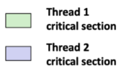

#
7. Synchronization: Basics
#
Shared Variables in Threaded C Programs
- Question: Which variables in a threaded C program are shared?
- The answer is not as simple as “global variables are shared” and “stack variables are private”
- Def: A variable x is shared $\iff$multiple threads reference some instance of x. 다수의 thread가 변수의 일부 instance를 참조할 때
- Requires answers to the following questions:
- What is the memory model for threads? Thread를 위한 하부 메모리 모델?
- How are instances of variables mapped to memory? 이는 어떻게 mapping되는가?
- How many threads might reference each of these instances? 얼마나 많은 thread가 이 변스들을 참조하는가?
#
Threads Memory Model
- Conceptual model:
- Multiple threads run within the context of a single process
- Each thread has its own separate thread context
- 자신만의 별도의 thread context : Thread ID, stack, stack pointer, PC, condition codes, and GP registers
- All threads share the remaining process context
- 전체 사용자 virtual address space : Code, data, heap, and shared library segments of the process virtual address space
- Open files and installed handlers
- Operationally, this model is not strictly enforced:
- Register values are truly separate and protected, but...
- 하나의 thread가 다른 thread register를 읽거나 쓰는 것은 불가능하나 모든 thread는 shared vm내 모든 위치에 접근 가능
- Any thread can read and write the stack of any other thread
- Register values are truly separate and protected, but...
The mismatch between the conceptual and operation model is a source of confusion and errors
#
Example Program to Illustrate Sharing
//sharing.c
char **ptr; /* global var */
int main()
{
long i;
pthread_t tid;
char *msgs[2] = {"Hello from foo", "Hello from bar"};
ptr = msgs;
for (i = 0; i < 2; i++)
Pthread_create(&tid, NULL, thread, (void *)i);
Pthread_exit(NULL);
}
void *thread(void *vargp)
{
long myid = (long)vargp;
static int cnt = 0;
printf("[%ld]: %s (cnt=%d)\n", myid, ptr[myid], ++cnt);
//Peer threads reference main thread’s stack indirectly through global ptr variable
return NULL;
}- 2개의 peer thread 생성하는 1개의 main thread
- main thread : 각 peer thread에 고유의 id 전달
- id를 이용해 thread routine이 호출된 message와 함께 개인화된 message print
#
Mapping Variable Instances to Memory
Global variables
- Def: Variable declared outside of a function 함수 밖에서 선언된 모든 변수
- Virtual memory contains exactly one instance of any global variable rumtime VM의 r/w영역 - thread에 의해 참조될 수 있는 각 전역 변수에서 정확히 하나의 instance 참조 (Instance : ptr)
Local variables
- Def: Variable declared inside function without static attribute
- Each thread stack contains one instance of each local variable
자신만의 local var instance를 가짐 - 다수의 thread가 thread routine을 동일하게 가질 때에도 동일 - ex. tid - 1 instance → main thread stack에 들어감 (tid.m) - ex. myid - 2 instance → peer thread 0, 1에 들어감 (myid.p0 , myid.p1)
Local static variables
- Def: Variable declared inside function with the static attribute
- Virtual memory contains exactly one instance of any local static variable.
//sharing.c
char **ptr; /* global var */
//Global var: 1 instance (ptr [data])
int main()
{
long i;
pthread_t tid;
char *msgs[2] = {"Hello from foo", "Hello from bar"};
//Local vars: 1 instance (i.m, msgs.m)
ptr = msgs;
for (i = 0; i < 2; i++)
Pthread_create(&tid, NULL, thread, (void *)i);
Pthread_exit(NULL);
}
void *thread(void *vargp)
{
long myid = (long)vargp;
//Local var: 2 instances ( myid.p0 [peer thread 0’s stack],
//myid.p1 [peer thread 1’s stack] )
static int cnt = 0;
printf("[%ld]: %s (cnt=%d)\n", myid, ptr[myid], ++cnt);
//Peer threads reference main thread’s stack indirectly
//through global ptr variable
return NULL;
}
#
Shared Variable Analysis
자신으 ㅣinstance 중 하나가 하나 이상의 thread에 의해 reference 되는 경우에만 공유되어 있음
- ex. cnt : shared (\because 단 1개의 runtime instance를 가지고 있으며, peer thread 모두에 의해서 참조되고 있기 때문에)
Which variables are shared?
Answer: A variable x is shared iff multiple threads reference at least one instance of x.
- Thus: ptr, cnt, and msgs are shared
- i and myid are not shared
#
Synchronizing Threads
- Shared variables are handy... (편리하다)
- ...but introduce the possibility of nasty synchronization errors.
#
badcnt.c : Improper Synchronization
counter variable increment code 예제 → cnt should equal 20, 000.
/* Global shared variable */
volatile long cnt = 0; /* Counter */
int main(int argc, char **argv)
{
long niters;
pthread_t tid1, tid2;
niters = atoi(argv[1]);
Pthread_create(&tid1, NULL, thread, &niters);
Pthread_create(&tid2, NULL, thread, &niters);
Pthread_join(tid1, NULL);
Pthread_join(tid2, NULL); /* Check result */
if (cnt != (2 * niters))
printf("BOOM! cnt=%ld\n", cnt);
else
printf("OK cnt=%ld\n", cnt);
exit(0);
}
/* Thread routine */
void *thread(void *vargp)
{
long i, niters = *((long *)vargp);
for (i = 0; i < niters; i++)
cnt++;
return NULL;
}
linux >./badcnt 10000
OK
cnt = 20000
linux >./ badcnt 10000
BOOM !cnt = 13051
linux > - What went wrong ?
- 두 thread가 하나의 variable을 increment한다고 할 때 2 thread가 20,000 이 나와야지 이상적인 결과이다.
- 실제 pthread programming을 통해 각각 계산해보면 20,000이 나오지 않음.
- = cnt가 atomic하지 않는다 = cnt 실행 도중 다른 thread로 실행이 넘어가 atomic하지 않기 때문에 interleaving된다.
- counter를 niters번 증가시키기에 최종 값이 2*niters라고 생각하지만 잘못된 값이 나온다
#
Assembly Code for Counter Loop
C code for counter loop in thread i
for (i = 0; i < niters; i++) cnt++;Asm code for thread i
| movq (%rdi), %rcx testq %rcx,%rcx jle .L2 movl $0, %eax | Hi : Head | | --- | --- | | .L3: ‘movq cnt(%rip),%rdx addq $1, %rdx movq %rdx, cnt(%rip) | Li :Loadcnt Ui : Update cnt Si : Store cnt | | addq $1, %rax cmpq %rcx, %rax jne .L3 .L2: | Ti : Tail |
- H_i : loop 앞에 위치한 Instruction block
- L_i : 공유변수 Cnt를 %Rdx에 load하는 Instruction (rdx_i : thread i 내의 register rdx)
- U_i : %rdx를 갱신하는 instruction
- S_i : renewed %rdx 값을 다시 공유 변수 cnt로 저장하는 Instruction
- T_i : loop 끝에 위치한 Instruction block
load update store : 세 가지 instruction
어떻게 interleaving되느냐에 따라 값이 다르다.
#
Concurrent Execution
- 일반적으로 OS가 thread를 위해 정확한 순서를 선택하게 될 지의 여부를 예측할 수 있는 방법은 없다.
- Key idea: In general, any sequentially consistent interleaving is possible, but some give an unexpected result!
l_i denotes that thread i executes instruction I
%rdx_i is the content of %rdx in thread i’s context


- Incorrect ordering : two threads increment the counter, but the result is 1 instead of 2
- thread 1이 cnt를 2단계에서 Load한 후에 thread 1이 자신의 갱신된 값을 6단계에서 저장하기 전 thread 2가 cnt를 5단계에서 load하기 때문에 일어난다.

- How bout this ordering?
- We can analyze the behavior using a progress graph

#
Progress Graphs
- instruction 순서를 process graph를 통해 명확히 할 수 있다.

- A progress graph depicts the discrete execution state space of concurrent threads.
- 하나의 상태에서 다른 상태로의 전환으로 Modeling
- Each axis corresponds to the sequential order of instructions in a thread.
- thread k의 진행에 대응된다
- Each point corresponds to a possible execution state (Inst1, Inst2).
- thread k가 I_k를 완료한 상태
- 그래프의 원점 : Initial state, thread 모두가 한 개의 Instruction도 완료하지 못한 상태
- E.g., (L1, S2) denotes state where thread 1 has completed L1 and thread 2 has completed S2. (L1, S2) Thread 1 14
#
Trajectories in Progress Graphs

A trajectory is a sequence of legal state transitions that describes one possible concurrent execution of the threads.
Example: H1, L1, U1, H2, L2, S1, T1, U2, S2, T2
어떤 순서로 진행되느냐에 따라 그 궤적이 달라진다. (어떻게 interleaving되느냐에 따라)
- 우 상향으로 interleaving됨.
- trajectory 실행하는 thread
#
Critical Sections and Unsafe Regions

Critical section : L, U, S instruction에 의해 형성 (thread i에 대해 shared var의 내용 조작)
- 다른 Thread의 Critical section과 중첩되면 안됨
L, U, and S form a critical section with respect to the shared variable cnt
Instructions in critical sections (wrt some shared variable) should not be interleaved
Sets of states where such interleaving occurs form unsafe regions
- 같이 interleaving되면 안되는 구간 “critical section”
- 한 thread 실행 중 다른 thread가 껴드면 안됨
- unsafe region

Untitled
- 같이 interleaving되면 안되는 구간 “critical section”
unsafe zone 은 둘레의 state에 접해 있지만 이들을 포함하지는 않는다.
Def: A trajectory is safe iff it does not enter any unsafe region
Claim: A trajectory is correct (wrt cnt) \iff it is safe
- unsafe region acccess를 막을 수 있는 방법 : synchronization
#
Enforcing Mutual Exclusion
Question: How can we guarantee a safe trajectory?
Answer: We must synchronize the execution of the threads so that they can never have an unsafe trajectory.
- i.e., need to guarantee mutually exclusive access for each critical section.
def : 각각의 thread가 자신의 critical section내의 Instruction을 실행하는 동안에는 exclusively shared variable을 접근하도록 보장하기를 원하는 현상
synchronize 됐다 = 상호 배타적으로 access를 guarantee해준다.
- : 여러 process가 경쟁해서 들어가면 하나만 들어갈 수 있도록 설계함
모든 safe trajectory는 shared counter를 정확히 갱신한다.
- thread program의 정확한 실행과 전역 data를 공유하는 동시성 프로그램에 대해서도 어떻게든 동기화하여 안전 궤적을 가지도록 해야 한다.
Classic solution:
- Semaphores (Edsger Dijkstra) : 비음수 정수 값을 값는 전역 변수로 P, V연산으로만 조작 가능
Other approaches (out of our scope)
- Mutex and condition variables (Pthreads)
- Monitors (Java)
#
Semaphore
non-negative global integer synchronization variable. : int s; (>=0)
Manipulated by P and V operations. semaphore variable을 바꿀 수 있는 방법 p, s 를 통해 manipulate
- manipulate : int var를 증가, 감소시킴 (+복잡)
Binary semaphore vs Counting semaphore
- initialize as 1 (binary) 5, 10
- semaphore의 초기 value는 critical session에 들어갈 수 있는 thread 개수
- critical session에는 딱 하나 thread 밖에 못 들어감
- Counting semaphore는 그 값을 5로 초기화해두었다면 5개 cricial session에 들어갈 수있음
critical session에 들어가고 나서 : P를 통해 들어갈지 안들어갈지 보고,
- 내가 들어갔다는 이야기 = Semaphore val = 1이고 critical session에서 작업하고 나올 때 누군가가 내가 아직 critical session에서 있을 때 들어오려고 하면 P에서 blocked (semaphore val = 0) -> blocked, suspended
- 내가 나올 때 unlock → V fn 호출한다.
#
P(s)
s라는 variable이 0인지 아닌지 봄
- **s \neq 0 : 0이 아니면 → 1을 빼고 나서 끝난다**
- If s is nonzero, then decrement s by 1 and return immediately.
- Test and decrement operations occur atomically (indivisibly)
- If s is nonzero, then decrement s by 1 and return immediately.
- s=0 : 본인이 suspend된다
If s is zero, then suspend thread until s becomes nonzero and the thread is restarted by a V operation.
내가 이 var보고나서 이 함수 안에서 여러 thread중 누군가가 decrement했다는 것 → 나는 그 값이 0보다 큰 값이 될 때까지 기다릴 것이다 (suspend, sleep)
until 0보다 큰 값이 될 때 : var x를 0보다 크게 만든 다음 깨워줄 때까지 기다림 (signal 받을 때까지)
After restarting, the P operation decrements s and returns control to the caller.
→ 깨어나게 되면, s라는 variable을 decrement하고 진행됨
(binary semaphore기억하고 설명) Semaphore가 1로 initialize -> 두 thread가 P/V
- critical session을 앞 뒤로 쌓아서 lock을 가져다 lock을 얻으면 들어가고 얻지 못하면 기다림
나올 땐 lock을 풀어주는 구조
- 이 P라는 것은 semaphore value를 가져다 확인하고, 그 값이 0이 아니라면 decrement
- 최초로 1로 되있을 때 들어간다고 하면 decrement하여 0으로 만들고, 그리고 critical session으로 들어감
- 만약에 들어가려 했는데 semaphore 값을 봤는데 0이다
→ blocked 된 상태로 남아있고 그 semaphore에 나는 wait하고 있다며 매달려 있음
- Process state transition diagram에서 보면 run 상태에서 block상태로
- 정리
- semaphore s 를 Decrement한다
- s \neq 0 - 그 값이 0보다 크면 decrement,
- $s=0$이면 sleep하고 누군가가 깨워줄 때까지 suspend된다. = CPU Cycle을 소모하지 않는다. → 즉 0보다 크거나 같은 값을 계속 체크하지 않고 suspended되어 있다가 signal오면 깨어나는 형태
#
V(s):
V의 정의 : 기다리고 있는 thread들이 재시작되는 순서를 정의하지 않는다.
- 요구하는 유일한 사항은 V가 정확히 한 개의 waiting thread를 restart → 여러 개의 thread가 하나의 Semaphore를 가지고 있을 때 어떤 것이 V의 결과로 재시작되는지는 예측 불가능
Increment s by 1 : s라는 variable을 increment해줌 → 그리고 나서 만일 s variable을 기다리고 있던 suspend thread가 있다면 그 중 한명을 깨워주고 → 그 thread가 decrement할수 있게 해줌
Increment operation occurs atomically : atomic하게 increment시키고 누군가가 s라는 variable을 decrement하지 못해서 pending되어있는 경우 (suspended된 경우), 여러 thread중 누군가 하나를 wake시켜서 decrement할 수 있게끔 한다.
정리하면,
S를 increment하고, 이 semaphore value에 기다리고 있던 blocked 된 thread를 깨워줌
semaphorevalue s 를 increment
→ 이 semaphore value의 기다리고 있떤 blocked된 thread를 깨워 줌
→ 여러 thread가 다같이 깨어남 : thundering herd
- block되어 기다리던 thread를 깨워 줌 → 깨어나 ready 상태로 가 scheduler에 의해 행사되어 critical session으로 들어감
‘Atomically’
- P,V는 atomically 수행된다 : indivisibly - 쪼개질 수 없는 함수이다. = p라는 함수는 실행이 되거나, 안 되거나 둘 중 하나이다.
- variable이 뭔지 test하고 이 variable을 어떤 값으로 setting해줌 (decrement)
- v또한 Atomically increment해주기 때문에 변수를 하나 증가해줌
If there are any threads blocked in a P operation waiting for s to become non- zero, then restart exactly one of those threads, which then completes its P operation by decrementing s.
test와 감소 연산은 semaphore s가 0이 아니면 s의 감소가 중단 없이 일어난다는 의미에서 개별적으로 일어남. V에서도 증가연산 개별적. - Semaphore를 중단 없이 load, 증가, 저장하기 때문
- Semaphore invariant: (s >= 0)
(질문) lock을 잡는다는 것이 cpu 제어권을 가진다는 것과 동치 표현인가?
single cpu에서는 cpu 제어권을 갖는다는 것과 lock
Lock잡은 다음 그 누구도 cpu 제어권을 가질 수 없다.
(질문) t1은 새로운 경쟁에 참여하지 않는가?
t1은 새로운 경쟁에 참여하지 않는다. 이미 lock을 풀고 남았기 때문에, critical session으로 다시 들어가지 않는다. 화장실 쓰다 나왔는데, 다시 들어가지 않지 않겠느냐
key를 누구한테 줄거야 : 나 나왔으니까 일어나-> 둘이 일어나서 둘중 하나 성공
둘중 하나 성공 :ready상태로 둘 다 보내놓고 경쟁하는 상황
누가 먼저 running할지 모르겠지만 ready한 상태: 하나가 lock잡으면 들어감.
나는 들어갔다 나왔기 때문에 다시 안들어감
- 단, 만일 loop로 짰다고 하면 다시 경쟁에 참여할 것
lock을 풀고 나왔는데 나도 다시 경쟁할 수 있음
(질문) interleaving한다는 개념
- critical session 이라고 이야기할 수 있는 cnt++
- 여러 thread가 cnt++를 부르게 되면
cnt는 load-update-store 명령어로 구성되어 있다.
Thread 1번이 load update store 수행하고 순차적으로 t2, t3가 수행함
-
interleaving이 일어나지 않음
Interleaving이란 : load하기 전에 다른 thread가 load하여 겹치게 되는 경우
(질문) t2, t3를 다 깨워주나요?
- pthread : 다 깨워주고, 그 중 한 thread만 lock을 잡아 줌.
- lock을 가져다 새 떼들이 한꺼번에 모이는 problem이라고 이야기함.
여러 thread 100개가 sleep할 때 동시에 wake해주면 성능이 떨어져서 단계적으로 깨워주기도 함.
(질문) 순서 부여 방식으로는 해결이 안되는가?
순서 부여하기 위해 semaphore를 사용함- 순서 부여 방식이 자동적으로 생기는 것임
- 암묵적으로 먼저 들어간애 있으면 자동적으로 그 다음 thread에 대한 순서가 만들어짐
- 형평성 있게 경쟁 다 같이 하게 해놓고, 순서가 자동으로 결정 -> ordering이 만들어짐
-
순서가 있다보니 중간 interleaving되는 경우가 안 나옴.
(질문) lock을 활용해 오직 하나의 thread만 running될 수 있는 상태면
context switch는 발생하지 않는가요?
결과적으론 lock을 들고 있는 thread만 실행될텐데 context switch로 인해
무의미한 overhead가 발생하지 않나 싶어 질문드립니다.
overhead : tradeoff
장점 : 화장실 들어갔다가 나올 때 언제 나올지 모르기 때문에 sleep
- 뒤에서 기다리는 thread: sleep -> CPU Cycle 소모 x
cpu 사용 : energy cost - battery 많이 먹음
그래서 일부러 sleep을 시키는것
- sleep한다음 깨어나려면 overhead : (잠깐 자다가 깨어나면 더 힘들지 않나)
- 깨어날 때 context switch일어나는데 block->ready->running 상태 과정에서 overhead가 있긴 함
- 가정) 화장실 갔는데 2,3명 기다리고 있음
먼저 들어간 사람이 금방 들어갔다 나올거면 금방 나올거니까 기다리는게 나음
한참 걸릴거 같으면 기다리는 thread들이 자고 있는게 효율적
- semaphore이 에너지 효율 관점에서는 좋음.
task의 길이가 무척 짧은 경우에는 sleep으로 가지 않는 mutex lock이 효과적일 수 있음.
-
critical session 크기에 따라 항상 semaphore 쓰는게 좋다곤 할 수 없다.
critical session 적당한 크기면 효과적이나, 너무 작을 경우 정말 언제 나올 것인지 polling하면 더 effective할 수 있음
(질문) thread들이 충분히 많을 경우 운이 없다면 영원히 lock을 받지 못하는 thread가 생길 수 있는가?
- 맞습니다 (starvation문제 : 경쟁을 계속 시키다보니까)
- OS program 자체도 thread

가정
- critical session에서 t1, t2, t3 경쟁하는 상황에서 thread 하나밖에 들어갈 수 없으므로 lock을 잡아 들어가야 한다. 물론 누가 들어갈지는 모른다 - 3개 중 하나가 lock을 잡게 될 것이다.
ex1. Thread1번이 lock을 잡았다면
- critical session에 t1들어가고
- t1은 자기 혼자 독점해서 cnt++같은 load update store같은 것을 혼자 수행함을 보장해줌
- t2, t3 는 lock을 잡으려고 p(s) 모두다 blocked된, suspend된 상태 = 자고 있는 상태 → thread 2번과 3번은 sleep된 상태
- 이후 t1이 나오게 되면 -> unlock (Lock을 풀어준다 : lock s)
- critical session에 t1들어가고
현재 Thread 2,3번 모두 sleep된 상태 → 2,3중 하나 : 한 녀석을 깨워준다
- 방법 :모두다 깨워서 경쟁을 다시 시키거나, (s:->t2->t3)
running 상태 → blocked 상태 → ready상태
- t2, t3가 들어가 있었는데 ready상태로 들어가서 줄 서서 기다린다.
- 자기 순서 들어가게 되면 running상태가 되어 깨워 줘서 이 상태로 갈 수 있게 하는 것을 V(s)가 수행해준다. → 그렇게 함으로써 기다리던 녀석 중 하나가 깨어나면 다시 시도해서 complete한다. decrement하게 되면 T2가 들어가게 된다.
#
C Semaphore Operations
Pthreads functions:
#include <semaphore.h> int sem_init(sem_t *s, 0, unsigned int val);} /* s = val */ int sem_wait(sem_t *s); /* P(s) */ int sem_post(sem_t *s); /* V(s) */- semaphore integer variable에 1로 초기화
- binary semaphore : cricital session에 1
- atomic 한 operation = 그 명령을 수행하는 한 줄짜리 machine code가 있는가?
- lock primitive :하나씩 제공해줌
- user level에서 사용할 수 있게 pthread에선 sem_wait
- → 그래서 쪼갤 수 없는 것이다.
sem wait : test and set
- variable s를 test하고 0보다 크고 작은지 확인, 0보다 크면 decrement (test → set)
- 이를 하나의 명령어로 만들어놈 / 그 명령어가 cpu architecture마다 다름
- load, store, add 등 : 쪼갤 수 없는 instruction
- Compare, swap : cpu designer 들이 lock primitive
- → pthread에서는 sem_wait 등으로 정의
CS : APP wrapper functions :
#include "csapp.h” void P(sem_t *s); /* Wrapper function for sem_wait */ void V(sem_t *s); /* Wrapper function for sem_post */ 20
#
badcnt.c : improper synchronization
- badcnt.c
/* Global shared variable */
volatile long cnt = 0; /* Counter */
int main(int argc, char *argv)
{
long niters;
pthread_t tid1, tid2;
niters = atoi(argv[1]);
Pthread_create(&tid1, NULL, thread, &niters);
Pthread_create(&tid2, NULL, thread, &niters);
Pthread_join(tid1, NULL);
Pthread_join(tid2, NULL);
/ Check result / if (cnt != (2 * niters)) printf("BOOM! cnt=%ld\n", cnt);
else printf("OK cnt=%ld\n", cnt);
}
exit(0);
/* Thread routine */
void *thread(void *vargp)
{
long i, niters = *((long *)vargp);
for (i = 0; i < niters; i++)
cnt++;
return NULL;
}How can we fix this using semaphores ?
#
Using Semaphores for Mutual Exclusion
- Basic idea:
- Associate a unique semaphore mutex, initially 1, with each shared variable (or related set of shared variables).
- Surround corresponding critical sections with P(mutex) and V(mutex) operations.
- Terminology:
- Binary semaphore: semaphore whose value is always 0 or 1
- Mutex: binary semaphore used for mutual exclusion
- P operation: “locking” the mutex
- V operation: “unlocking” or “releasing” the mutex
- “Holding” a mutex: locked and not yet unlocked.
- Counting semaphore: used as a counter for set of available resources. rsrc 집합에 대한 counter로 이용된 semaphore
#
goodcnt.c: Proper Synchronization
하나만 들어갈 수 있도록
- volatile로 선언
cacheing되지 않도록, memory에 직접 쓸 수 있도록
sem_t : unsigned integer
c code를 단순히 변환해주는 것만이 아닌
- optimization이 들어가서, code 최적화를 통해 code를 빠르게 하나
- correctness에서 문제가 생길수도 있음
Define and initialize a mutex for the shared variable cnt:
volatile long cnt = 0; /* Counter **/ sem_t mutex; /** Semaphore that protects cnt **/ Sem_init(&mutex, 0, 1); /** mutex = 1 */- Volatile 선언 → memory 변수 cnt
- cnt 접근할 때 memory r/w 보장해줌
- volatile 선언 안하게 되면 →
- 어떤 compiler는 code opt 중 every step memory r/w하는 것이 아닌 Register 값으로 Code optimization해줄 수 가 있음
- correctness에 문제 생길 수 있음 : unexpected 문제를 막기 위해
- volatile 같은 것도 선언하여 항상 memomry에서 읽고 쓸 수 있게. 항상 결과값을 memory에 저장해두고 진행하는 것이 volatile의 역할
- Volatile 선언 → memory 변수 cnt
Surround critical section with P and V:
- thread routine에서 P, V연산으로 shared variable cnt를 둘러싸 renew 보호
for (i = 0; i < niters; i++) { P(&mutex); cnt++; V(&mutex); }linux> ./goodcnt 10000 OK cnt=20000 linux> ./goodcnt 10000 OK cnt=20000 linux>Warning: It’s orders of magnitude slower than badcnt.c.
- 직렬화되어 있음 : 하나만 들어가고, badcnt 는 마구잡이로 critical session에 들어감
- → 무작위적으로 들어가고 지금은 순서를 정해 들어감
- lock을 건다 = 순서대로 들어간다, 순서가 부여
- 동시에 실행할 수 있으면 빠름 - 동시에 실행하되 critical session 부분은 순서에 따라 들어가야 함
- = 직렬화 됨 -> 느림
ques
(질문) cnt가 다른 thread에 의해 수정됨을 막기 위해 p(&mutex)로 다른 thread를 sleep시키고
cnt++수행 후 깨워주는 것이라고 이해했는데 맞나요?
-
맞다. 막아주고 lock을 가지고 들어갔기 때문에 다른 thread는 들어오지 못함.
(질문) semaphore 방식을 이용해도 cnt변수는 volatile로 선언해야만 하나요?
-
cnt++했는데 cache에 있을 수 있으니까 cacheing방지용으로 volatile 선언
(질문) semaphore 변수도 여러 thread가 접근가능한데, 여기서 문제 생기지 않는 이유는
P, V 함수들이 atomic하기 때문인가?
- 맞다. 한 thread가 decrement increment하는 일 자체가 atomic하기 때문에 맞다.
(질문) thread 여러 개를 깨울 때 이 순서가 암묵적으로 정해져 있나? 완전 랜덤인가?
다 깨워놓고 그 중 경쟁에서 이긴 thread가 그 다음순서가 됨
(질문) 코드상 volatile로 선언안하면 memory가 아니라 반드시 cache에서 가져와서 문제가 되는것인가?
- 맞다. volatile로 안 선언하면 memory가 아니라 cache에서 가져와서 문제생김
(질문) semaphore t가 volatile로 선언되는가?
- 체크해보겠다.
(질문) for loop내 p가 block되고 나면 cnt++지나서 v까지 도달할 수 있나?
v에서 이 thread를 깨워줘야 하는데, v까지 도달할 수 없지 않는가?
- p부터 resume해서 진행됨
- P, V에 의해 만들어진 forbidden region : multiple thread가 포함된 critical section의 Instruction을 항상 실행할 수 없게 해 준다 = semaphore 연산은 critcal section으로 mutual exclusive approach를 보장해준다.
-
#
Why Mutexes Work

P, V의 조합이 forbidden region이라 불리는 state set을 생성한다 : s<0
- semaphore invariant으로 인해 forbidden region state를 포함하는 궤적이 존재하지 않음 + forbidden region이 완전히 unsafe region을 감싸므로 모든 가능한 궤적들은 위험 영역의 모든 부분을 지날 수 없다.
- → 모든 trajectory는 safe + Runtime instruction order와 무관하게 정확하게 Counter 증가
- Provide mutually exclusive access to shared variable by surrounding critical section with P and V operations on semaphore s (initially set to 1)
- Semaphore invariant creates a forbidden region that encloses unsafe region and that cannot be entered by any trajectory.
- forbidden region으로도 들어가지 않는다.
#
Summary
- Programmers need a clear model of how variables are shared by threads.
- Variables shared by multiple threads must be protected to ensure mutually exclusive access.
- Semaphores are a fundamental mechanism for enforcing mutual exclusion.